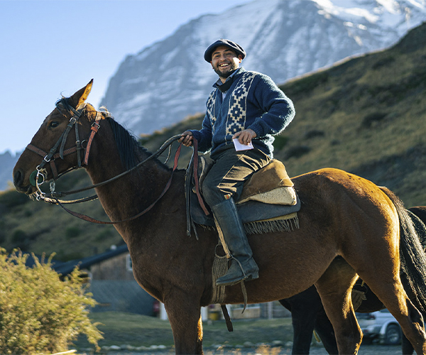

History
Origin
Culture
Beers
Contact

Behind the green meadows and the mighty rivers that draw the landscape of Patagonia , the cultural legacy of the German settlers who settled in that country in the mid-19th century can be glimpsed , taking advantage of the low mineralization of perhaps the purest waters in the world to create "select" beers , the soft waters of the rivers in the area allow us to combine the flavors of the malts much better. Being lighter and less hard waters, we can make silkier , more balanced beers ,